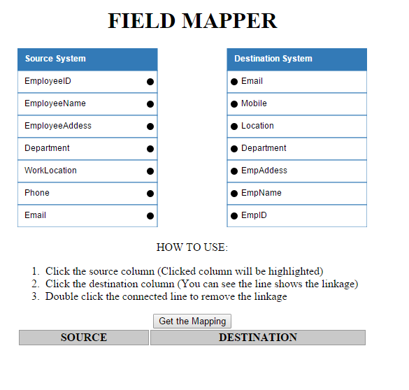
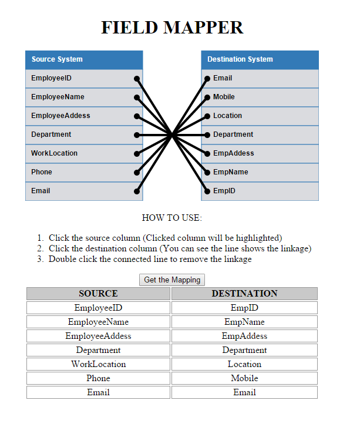

Field Mapper
It's AngularJS's directive for field mapping. It can be used for any two list mapping or database table's column mapping.
Requirements
- AngularJS 1.3.X (https://angularjs.org/)
- D3 3.5.x (http://d3js.org/)
How to Use
Refer demo/index.html source
Sample Screen-shots
Initial Screen

Fields Connected

MIT License